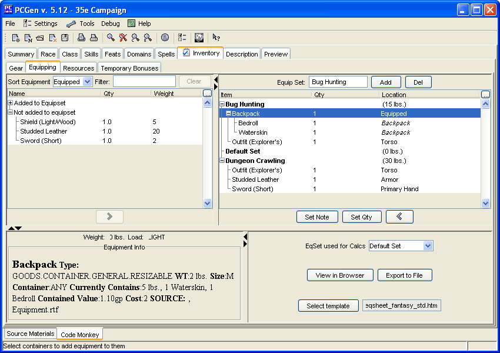

This Sub-tab allows the Gear that was puchased to be equipped. It also allows the creation of multiple equipment sets so you can print output sheets based on different weapon, armor and item combinations for your character.
Select locations for the items your character owns on the upper right frame.
Armors, shields, and magical items need to be marked as "Equipped" so that PCGen gives you the appropriate benefit for using them.
Wepons can be equipped as Single Handed, Two Handed and Both Hands. The equipped style determines what bonuses/penaties apply. Weapons that are carried will appear on the character sheet in the weapons section.
Some items are containers and can hold other items.
Every item your character is carrying should be marked "Carried" so your encumbrance will be figured correctly.
You can add additional equipment sets by typing in the name of an equipment set and clicking on the Add button (in the Upper right hand frame).
You can then select equipment from the left hand frame (this contains what you bought in the gear tab) into the equipment sets you chose (e.g. Dungeon, City etc). You can do this by selecting an item and double clicking on it or clicking on the Add (">") button.